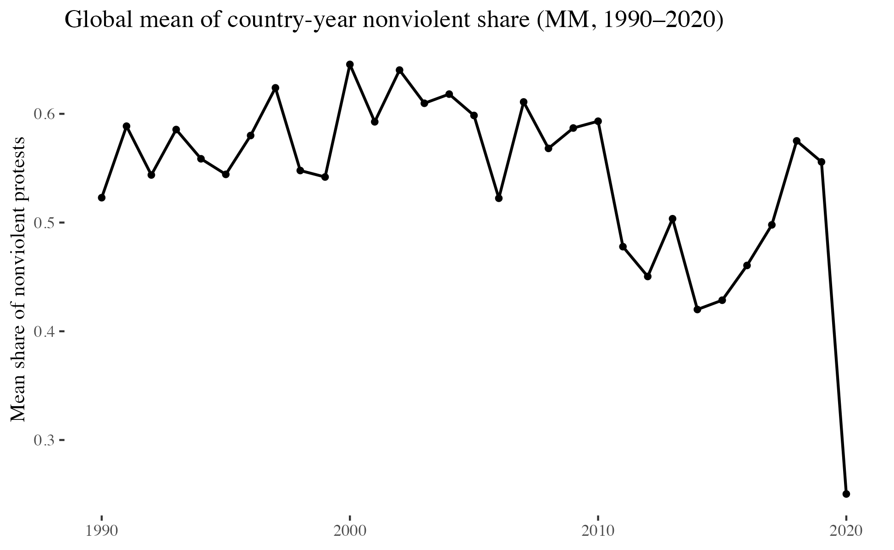
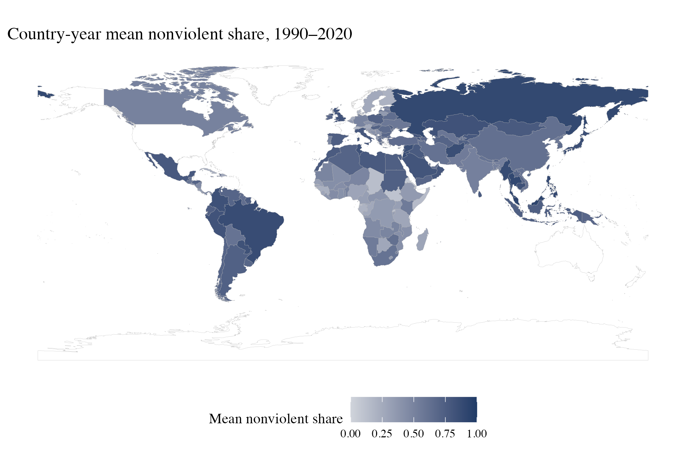
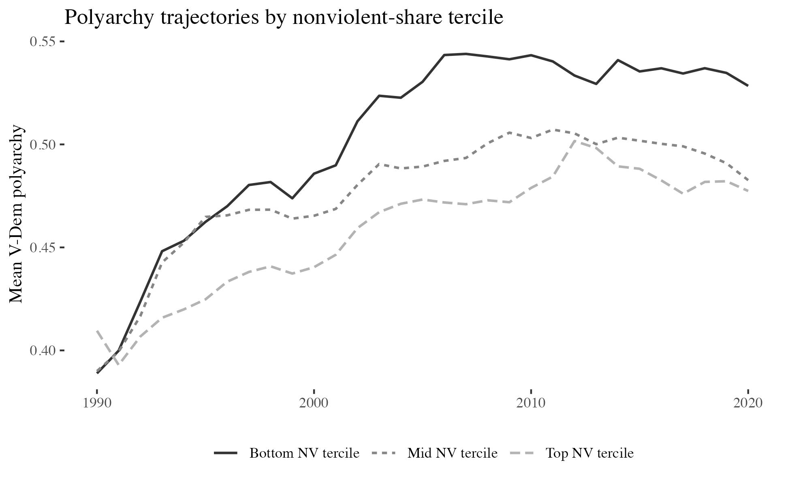
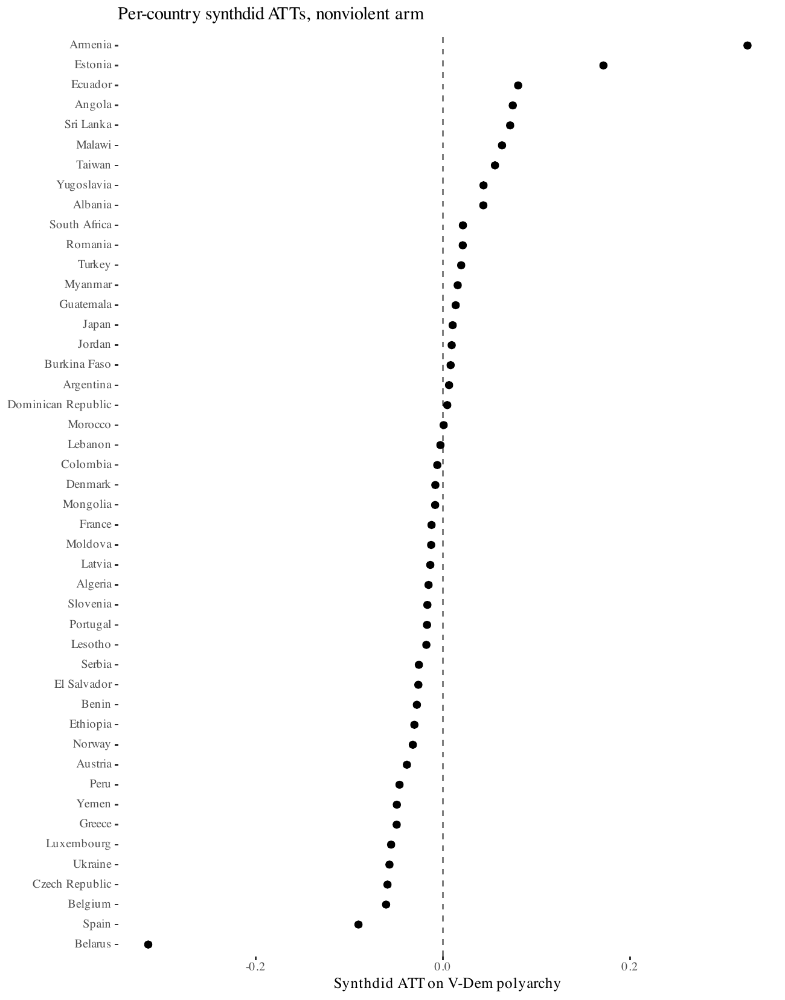
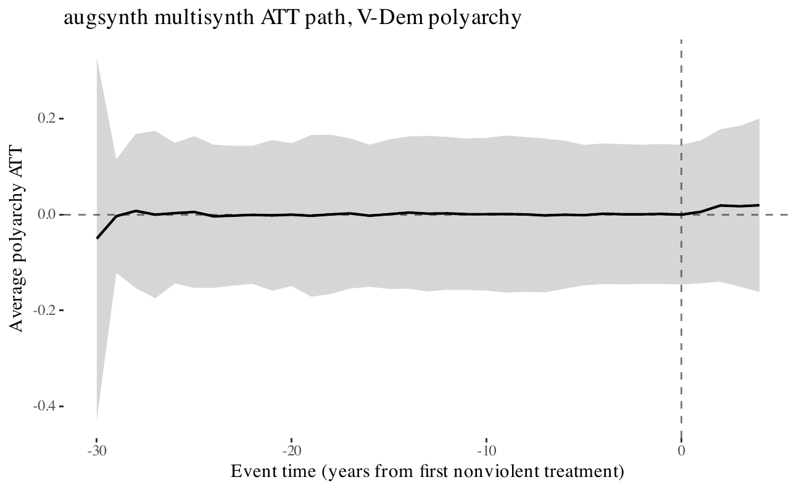
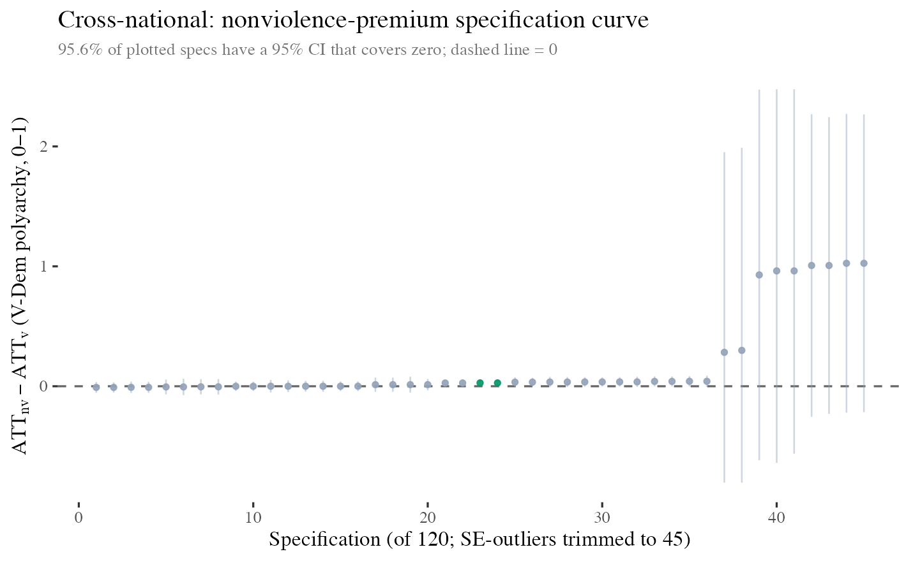

Movement Mechanics — Paper A_MM
Cross-national evidence from 166 countries, 1990–2020
Charles Crabtree & John B. Holbein
Monash University · Korea University · University of Virginia
slides_a_mm.html
The Question
Chenoweth and Stephan (2011) famously argue that campaigns mobilising ≥3.5% of population almost always succeed when nonviolent. That claim is between-campaign. We ask the same question at the country-year level, holding the country (and the year) fixed, so that the comparison is between years of a country with nonviolent-dominated mobilisation and years of the same country without — and between countries that did and did not have a high-nonviolent-intensity year.
Why Redo This at Country-Year Scale
Success rates of campaigns classified nonviolent vs violent across roughly 300 NAVCO cases. Powerful descriptive evidence, but campaigns differ systematically in country, era, state capacity, and coalition composition.
The within-country average treatment effect (ATT) of a high-nonviolent-intensity year on V-Dem polyarchy, differenced against the trajectory of countries that never had such a year, with country and year fixed effects absorbing stable differences and common shocks.
"Within-unit" = within-country over time. We do not follow single campaigns through tactical shifts; that would require a different identification strategy. We compare the post-treatment trajectory of a country whose nonviolent intensity crossed the 90th-percentile threshold in some year to the trajectory of countries that never crossed it, and mirror that comparison for the violent arm.
Three Competing Claims
Conditional on intensity, nonviolent protest produces a larger increase in V-Dem electoral democracy than violent protest. This is the civil-resistance frame at the cross-national scale.
Conditional on intensity, the arm contrast is zero. Tactical character adds no information beyond scale.
Conditional on intensity, violent protest produces a larger response than nonviolent protest — because state-security repertoires and elite bargaining, not public-opinion mobilisation, are what move polyarchy in many regime types.
Why Mass Mobilization
Unit = the campaign. Each case has a nonviolent/violent label, a success outcome, and aggregate descriptors. You cannot recover a country-year treatment indicator or a pulse timing from it.
Unit = the protest event. 17,145 geocoded anti-government events, 166 countries, 1990–2020. Each event has a binary protester-violence flag, a seven-bin participant-size bracket, seven state-response codes (from "ignore" through "shootings"), and a date. Exactly what a staggered-DiD design needs.
Why V-Dem Polyarchy
Chenoweth and Stephan's success-outcome is explicitly regime change toward democracy. The Varieties of Democracy (V-Dem) project's polyarchy index (Coppedge et al., v14) operationalises Dahl's electoral-democracy dimensions on a 0–1 continuous scale, with annual country observations and near-complete coverage back to 1990. Polity 5 gives a second regime-quality outcome on a different scale for robustness, and the World Bank's World Development Indicators (WDI) supply social-spending outcomes that play the same role here as Census-of-Governments public-safety spending plays in the U.S. county-year companion paper.
Data
17Kprotest events
5,146country-years · 166 countries
Mass Mobilization participant-size brackets are populated for 57.7% of events; the remaining 42.3% are kept as missing rather than imputed. V-Dem polyarchy is joined at 99.3% country-year coverage; Polity 5 at 83.4%.
Mobilisation Mix by Year

Global mean country-year share of nonviolent protest hovers between 0.55 and 0.65 through the 1990s and 2000s, steps down to roughly 0.45 in the early 2010s as the Arab Spring and the Syrian civil war push the violent share up, partially recovers, and collapses to roughly 0.25 in 2020. The share is not monotonic. This is one reason the specification curve includes a drop-Arab-Spring sample-window cell.
Geography

Darker indigo = higher nonviolent share over the panel. Latin America and parts of East Asia sit on the high end; Middle East and parts of Sub-Saharan Africa sit lower. The raw map already hints at a confounder: polity types with more political-opportunity structure lean nonviolent.
V-Dem Trajectories by Nonviolent-Share Tercile

The bottom nonviolent-share tercile (most violent countries) rises fastest — from 0.39 to 0.53. The top tercile (most nonviolent) only reaches 0.48. This is the opposite of what a naive Nonviolence-Premium reading would predict, and it is the selection problem a between-campaign design cannot escape. Our fixed-effects design absorbs exactly this kind of country-level confounding.
Design
Δ = ATT(nonviolent arm) − ATT(violent arm) on V-Dem polyarchy. Each country-year gets two intensity scores (nonviolent share × mean participants and the violent analog); a country enters the nonviolent arm in the first year its nonviolent intensity crosses the 90th percentile of the pooled positive distribution, and the violent arm symmetrically. Country and year fixed effects absorb stable regime-level differences and common global shocks.
We run four estimators rather than one because identification in a cross-national panel rests on multiple non-nested assumptions, and we want to know which conclusions survive which assumptions.
Why Four Estimators
Staggered DiD, cohort-specific ATTs, not-yet-treated controls. Fastest to fit; parallel-trends is the binding assumption.
Weights donors by pre-period outcome match. Handles unit- and time-specific unobservables under an "interactive" factor structure. Parallel trends is replaced by a convex hull assumption.
Ben-Michael, Feller, Rothstein (2021); we use the staggered-adoption multisynth implementation. Handles many treated units jointly with ridge augmentation for donors whose pre-period outcomes don't match.
Matches each treated country-year to controls with similar pre-period outcome trajectories. Essentially conditional independence given the matched history.
Headline Estimate · Callaway–Sant'Anna
| Quantity | Value |
|---|---|
| ATTnv (raw, polyarchy 0–1) | −0.012 |
| ATTv (raw, polyarchy 0–1) | +0.007 |
| Δ (contrast) | −0.019 |
| SE (Δ, independent-arm lower bound) | 0.031 |
| p | 0.527 |
| Treated countries (nv / v / overlap) | 67 / 62 / 29 |
No 2020-style single-year fiscal-shock confounder — the violent arm spreads across the full 1990–2020 window — which makes this cleaner than the A_US estimate.
Four Estimators Agree
| Estimator | ATT (polyarchy, 0–1) | SE |
|---|---|---|
| Callaway–Sant'Anna (arm contrast) | −0.019 | 0.031 |
| Synthetic DiD (per-country mean) | −0.001 | 0.012 |
| Augmented Synthetic Control (multisynth) | +0.010 | 0.236* |
| PanelMatch (lead 4) | −0.012 | 0.008 |
*Augmented Synthetic Control's wild-bootstrap SE is deliberately conservative without unit fixed effects. All four point estimates are economically small (|ATT| ≤ 0.02 on the V-Dem polyarchy 0–1 scale) and every 95% CI covers zero.
Synthetic DiD · Per-Country ATTs

The 21 dropped countries failed a completeness check (fewer than 10 complete-panel donors or fewer than 3 pre-treatment periods on V-Dem polyarchy). The included distribution is symmetric around zero with no systematic premium or backlash.
Augmented Synthetic Control · Polyarchy Path

Ridge-augmented average treatment path across all treated countries; x-axis is years from each country's first nonviolent-intensity treatment year. Wild-bootstrap CI is deliberately conservative without unit fixed effects; the point estimate barely moves off zero at any lag or lead.
Chenoweth–Stephan Replication
30nv-maximalist country-years (≥3.5%)
4v-maximalist country-years (≥3.5%)
Five-year-forward polyarchy gap (nv − v) = −0.006 (SE 0.060). The famous 3.5% cliff rests on a comparison where the violent arm barely exists. The cliff is not refuted by our data; it is simply not adequately tested against a counterfactual in which the violent arm is populated.
Specification Curve · 120 Cells

Of 120 spec cells (3 violence measures × 4 cutoffs × 5 outcomes × 2 sample windows), 45 had a finite, non-outlier SE. Almost all cluster on zero with tight CIs; the right tail with large CIs corresponds to outcome × cutoff combos where one arm has fewer than five treated countries and the estimate is essentially unidentified.
Reading A_US and A_MM Together
Backlash-signed but insignificant contrast; identified by a 2020 cohort whose CoG fiscal data is contaminated by ARPA. Raw sign consistent with Violence Backlash; 95% CI covers zero.
Clean null across four estimators. No single-year fiscal-shock confounder. The 3.5%-maximalist subsample has only 4 violent country-years to compare against 30 nonviolent ones.
Combined reading. Once we remove the 2020 U.S. fiscal confounder, Intensity Equivalence is the null that survives. The Chenoweth–Stephan 3.5% cliff is not overturned, but it rests on a comparison that our within-country design cannot populate with enough violent maximalist cases to test cleanly.
Bottom Line · Two-Paper Headline
Four estimators agree at the country-year scale. The companion U.S. county-year paper (A_US) returns a backlash-signed-but-insignificant contrast that is contaminated by 2020 ARPA transfers.
Thank You
Crabtree: Senior Lecturer, School of Social Sciences, Monash University · K-Club Professor, University College, Korea University
Holbein: Associate Professor, Frank Batten School of Leadership and Public Policy, University of Virginia